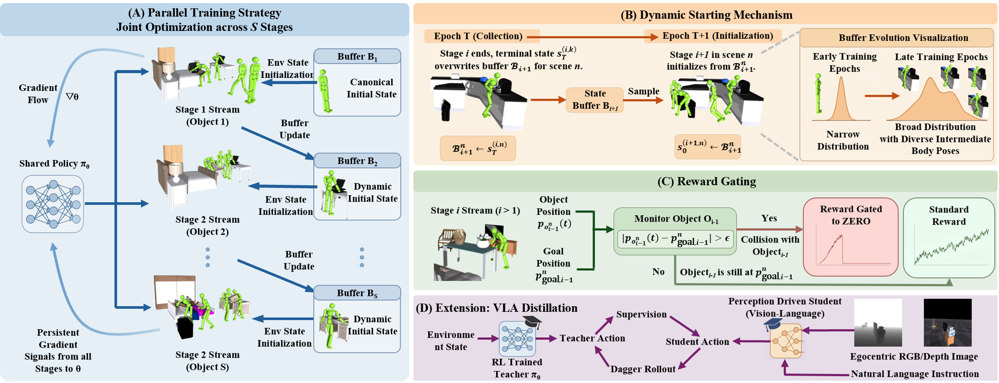

Humanoid Horizon: Extending Task Horizon in Whole-Body Loco-Manipulation via Parallel Training, Dynamic Starting, and Reward Gating
1The University of Manchester
2University of Science and Technology of China
3X-Humanoid
4University of Warwick
5Newcastle University
*Corresponding authors
Abstract
Cluttered indoor environments, where large and heavy objects are scattered across diverse surfaces, require humanoid robots to sequentially navigate, grasp, transport, and accurately place each item at its target location within a single uninterrupted episode. This long-horizon, whole-body loco-manipulation task remains a significant challenge for current methods. Previous approaches often suffer from two main issues: easy-reward bias, where training overemphasizes early transport stages at the expense of later ones, and catastrophic forgetting, where focusing on later stages leads to a decline in earlier-stage performance. In this work, we introduce Humanoid Horizon, a unified policy framework designed to overcome these limitations through three interrelated mechanisms. The Parallel Training Strategy organizes N scenes into S concurrent stage streams governed by a shared policy, ensuring all transport stages receive continuous gradient updates and removing the bottleneck of sequential optimization. The Dynamic Starting Mechanism updates each environment's initial state with terminal states from upstream rollouts, gradually broadening transition coverage and enhancing robustness at stage boundaries. Reward Gating sets the reward to zero for the rest of the episode in later-stage streams when the immediately preceding object is displaced beyond a set threshold, so the shared policy learns not to disturb a just-placed object and earlier placements are preserved throughout the episode. Collectively, these strategies achieve per-stage success rates exceeding 80% on the two-object LHM-Humanoid benchmark (350 training scenes, 66 held-out scenes). As the number of sequentially transported objects grows beyond two, success declines with the horizon, but the degradation is graceful relative to the sharp drop seen in all baselines. Additionally, we demonstrate that the RL teacher policy can be distilled into a Vision-Language-Action student via DAgger. When provided only with egocentric RGB or depth observations and natural language instructions, the student successfully replicates the teacher's long-horizon, multi-object behaviors, highlighting the potential for perception-driven deployment on real humanoid robots.
Method
